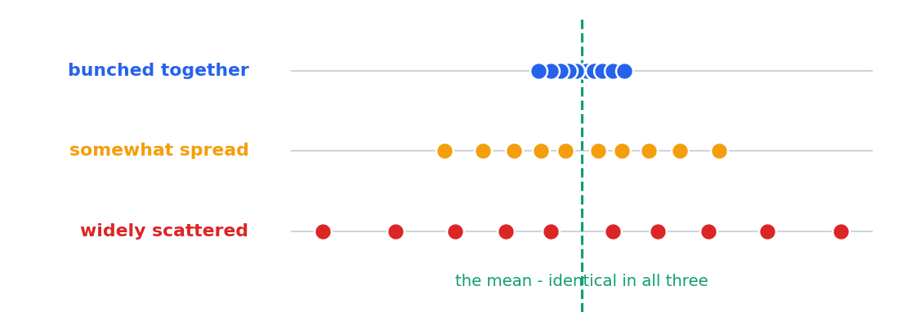
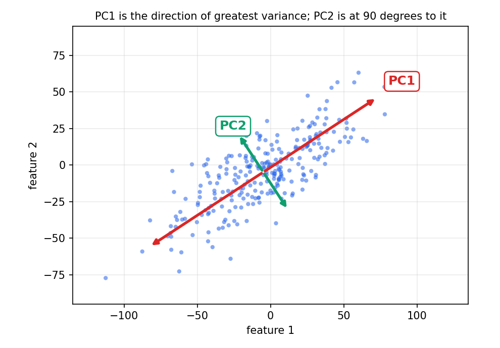
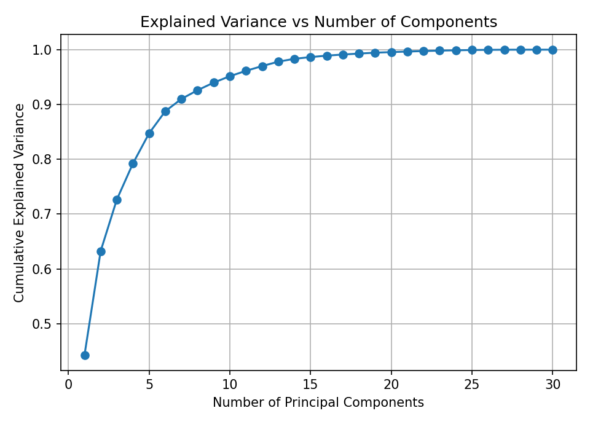

PCA - Principal Component Analysis
Lesson 21 grouped the rows of a table. Today we shrank its columns: thirty measurements of a cell nucleus down to two, without deleting twenty-eight of them. PCA builds new columns, each one a weighted blend of all the old ones, chosen so the rows stay as spread out as they can. We started with variance - the only thing PCA optimises - worked it out by hand on five numbers, then met the one operation you actually perform with a component: multiply a row by it and get a single number. Then explained_variance_ratio_, and the curve that tells you how many components to keep. This page is the notebook, cell by cell, with the real outputs.
Open Class Code
One notebook today. Open it from the repository for August 26, 2026:
| notebook | what it covers |
|---|---|
| PCA.ipynb | The theory in markdown slides, then PCA on a 569 × 30 tumour table |
| tumor_data_features.csv | The data - 569 tumours, 30 numeric measurements, no label column |
y, both usually follow a StandardScaler, and both make you choose a number up front. They do opposite things to the table: K-Means cuts the rows into groups and leaves the columns alone; PCA rebuilds the columns and leaves every row in place.
The imports at the top are the familiar block from previous lessons:
import pandas as pd
import numpy as np
import matplotlib.pyplot as plt
import seaborn as sns
from IPython.display import display
from sklearn.tree import DecisionTreeClassifier
from sklearn.metrics import accuracy_score, confusion_matrix
from sklearn.ensemble import RandomForestClassifier
from sklearn.datasets import load_iris
from sklearn.model_selection import train_test_split
from sklearn.metrics import classification_reportAnd the one line that is new today:
from sklearn.decomposition import PCAPCA lives in sklearn.decomposition - a module of models that take a table apart into simpler pieces. Note what it is not next to: it is not in sklearn.cluster with KMeans, and not in sklearn.feature_selection with SelectKBest. PCA neither groups rows nor picks columns; it builds new ones.
What PCA is for
PCA is a method for dimensionality reduction - turning a table with many features into a table with fewer, while losing as little as possible. It does this by creating a new axis which is a blend of the original features. That axis is called a principal component, and it is chosen to preserve as much of the variance in the data as it can.
A scatter plot has two axes. Thirty columns give 435 possible pairs and no single picture of the whole shape.
Distance-based models do work proportional to the number of columns, on every row, every time.
More columns means more room for a model to memorise noise instead of learning the pattern.
And the reason PCA can help at all: the columns repeat each other. In today's table mean radius, mean perimeter and mean area are three ways of measuring how big the nucleus is. They rise and fall together. Three columns carrying roughly one fact - and PCA folds them into one.
Variance - how spread out the numbers are
Everything PCA does rests on one measurement, so the notebook stops and builds it from scratch. Here are three columns of ten numbers. They have the same average and differ only in how far the values sit from it:

Now the formula, which says exactly what you just looked at:
Distance from the mean, squared, added up, divided by how many there were.
The squaring is the part worth pausing on: it makes a value 4 below the mean count the same as one 4 above. Without it the deviations would always cancel to zero.
The notebook's worked example
Take X = [2, 4, 6, 8, 10]. The mean is \(\bar{X} = (2+4+6+8+10)/5 = 6\).
| x | x − x̄ | (x − x̄)² |
|---|---|---|
| 2 | 2 − 6 = −4 | 16 |
| 4 | 4 − 6 = −2 | 4 |
| 6 | 6 − 6 = 0 | 0 |
| 8 | 8 − 6 = 2 | 4 |
| 10 | 10 − 6 = 4 | 16 |
| sum | 0 - always | 16 + 4 + 0 + 4 + 16 = 40 |
Five values, sum of squared deviations 40, so the variance is 8.
Standard deviation, and the n − 1 version
The standard deviation is simply the square root of the variance:
Same information, readable units.
| measure | units | what it is good for |
|---|---|---|
| variance | the square of the data's units | It adds up. The variance of several columns together is the sum of theirs - which is why PCA is stated in variance. |
| standard deviation | the same units as the data | Reporting. "2.83 marks" means something to a human; "8 marks squared" does not. |
The second example - and where n − 1 comes in
The notebook then measures ten people's weight. The values add to 700, so the mean is \(\bar{x} = 700/10 = 70\) kg. Squaring each deviation:
| person | weight | (x − 70)² | person | weight | (x − 70)² |
|---|---|---|---|---|---|
| 1 | 62.5 | 56.25 | 6 | 70.0 | 0.00 |
| 2 | 64.0 | 36.00 | 7 | 72.5 | 6.25 |
| 3 | 66.0 | 16.00 | 8 | 74.0 | 16.00 |
| 4 | 67.5 | 6.25 | 9 | 76.0 | 36.00 |
| 5 | 70.0 | 0.00 | 10 | 77.5 | 56.25 |
| sum of all ten squares | 229 | ||||
Divided by 9, not by 10.
n gives the variance of the numbers you have. Dividing by n − 1 estimates the variance of the wider population they were sampled from, and is the default in pandas.var(), np.var(ddof=1) and inside scikit-learn. Here it is the difference between 22.9 and 25.44 - about 11%, because ten rows is a small sample. On the 569 rows of today's table the difference is under a fifth of a percent, which is why nobody mentions it again.
np.var(x) divides by n; pd.Series(x).var() divides by n − 1. Same data, two different answers, and neither is wrong. If a hand calculation disagrees with pandas by a few percent on a small array, this is almost always why.
Principal components - new axes through the cloud
A principal component is not a column of the table and not a row of it. It is a direction - an arrow through the data, written as one weight per original feature. The components are new axes, each a blend of the original features, and each holding as much variance as it can.

PC1
A vector pointing in the direction of the greatest variance in the data. No direction is more spread out than this one.
PC2
A vector orthogonal to PC1 that explains the remaining variance - the most spread out of everything left over.
All of them
Every principal component is orthogonal to every other. They form a complete new set of axes for the same space.
Length 1
All components are normalised - their weights squared add up to 1. A component is a direction, not a distance.
[0.7, 0.7], that is a direction at 45° - the diagonal - and it says the data is most spread out along that diagonal rather than along either axis on its own.
fit hands you the finished directions, and from there everything is one multiplication.
Using a component - multiply, and get one number
This is the whole of "using PCA". You have a row of values and a component of weights. Multiply each value by its weight, add the products, and the row now has a single number. That number is the row's projected value on that component.
One row in, one number out.
The notebook's example
One student's marks in three subjects, and a component that weights maths hardest:
# Obs1 = [math: 85, english: 90, sciene: 80]
# PCA1 = [0.5, 0.3, 0.2]
# what is the projected value?| feature | value | weight | product | running sum |
|---|---|---|---|---|
| math | 85 | × 0.5 | 42.5 | 42.5 |
| english | 90 | × 0.3 | 27.0 | 69.5 |
| science | 80 | × 0.2 | 16.0 | 85.5 |
| projection onto PC1 | 85.5 | |||
Three numbers went in. One number came out - and that is the dimensionality reduction, for one row.
The same thing in two dimensions
The notebook then does it again with a point you can picture. If PC1 is the vector [0.7, 0.7], the new direction runs at 45° - the direction the data is most scattered along. Take the point [90, 70] and project it onto that direction:
The point keeps a single coordinate, 112, measured along the new PC1 axis.
n_components=2 simply means sklearn hands you two weight vectors and runs both multiplications for every row. The row never changes - only how many directions you measure it along.
StandardScaler fitted before the PCA, and if the weights line up with the columns in the same order. Get either wrong and the arithmetic still runs and still gives you a number - just a meaningless one.
Explained variance
Reducing 30 columns to 2 clearly loses something. Explained variance is the number that says how much. The notebook builds it on an example small enough to check by hand: ten people, measured two ways.
| variable | variance | standard deviation |
|---|---|---|
| height (cm) | 100 | about 10 cm |
| weight (kg) | 25 | about 5 kg |
| total variance | 100 + 25 = 125 | variances add; standard deviations do not |
That 125 is the whole pot. The explained variance ratio of a component is its slice of it:
A component carrying 100 of the 125 would score 100/125 = 0.80 - it keeps 80% of what both columns had, in one column instead of two.
explained_variance_ratio_ comes back in descending order every time. You never have to sort it, and component 7 can never beat component 6.
The tumour table
With the theory done, the notebook loads the data:
df = pd.read_csv('tumor_data_features.csv')
df569 rows, 30 columns, every one of them numeric. Three things about this table are worth noticing before anything else touches it:
| observation | why it matters today |
|---|---|
| no label column | There is no y here at all. Nothing to predict, nothing to split off - PCA is unsupervised, and the table is exactly what it wants. |
| the columns repeat | mean radius, mean perimeter and mean area are three measurements of one thing. That redundancy is what PCA will compress. |
| wildly different units | mean area runs to 1479 while mean smoothness sits around 0.1. Variance is unit-dependent, so this must be scaled first - topic 12 shows what happens if it is not. |
PCA in five lines
Here is the whole thing:
import pandas as pd
from sklearn.decomposition import PCA
from sklearn.preprocessing import StandardScaler
import matplotlib.pyplot as plt
scaler = StandardScaler()
scaled_data = scaler.fit_transform(df)
pca = PCA(n_components=2)
pca_result = pca.fit_transform(scaled_data)
print(pca.components_)
# Step 6: View the explained variance ratio
print("Explained Variance Ratio:")
print(pca.explained_variance_ratio_)| line | what it does |
|---|---|
| StandardScaler() | Every column to mean 0 and variance 1. Not optional here - see topic 12. |
| PCA(n_components=2) | Asks for two components. Two because two is what you can put on a scatter plot. |
| fit_transform | fit finds the directions; transform multiplies every row by every direction. The multiplication from topic 6, 569 rows at a time. |
| components_ | The weights - the recipe. This is what you multiply a row by. |
| explained_variance_ratio_ | How much of the spread each component kept. |
The shapes at every step are the clearest summary of what happened:
| object | shape | one entry is |
|---|---|---|
| df | (569, 30) | one measurement of one tumour |
| scaled_data | (569, 30) | the same, as a z-score - still 30 columns |
| pca.components_ | (2, 30) | one weight: how much column j counts towards component i |
| pca_result | (569, 2) | one projection: row i multiplied by component j |
components_ is the piece everybody misreads. It is not the reduced data. It has 30 columns and 2 rows - the reduced data has 2 columns and 569 rows. components_ is the recipe; pca_result is the dish.
Reading the output
print(pca.components_) gives two rows of thirty weights - PC1 on top, PC2 below:
Read the top row: every weight is positive, and most sit between 0.1 and 0.26. So PC1 is roughly "add up all thirty measurements, with a bit more emphasis on some" - a row scoring high on PC1 is a nucleus that is large and irregular on most measures at once. PC2's row mixes signs, so it contrasts one group of measurements against another.
PC1 keeps 44.3% of the total spread and PC2 another 19.0%. Together, 63.2% of everything the thirty columns held, in two columns. Where those percentages come from:
| variance along it | ÷ total | ratio | |
|---|---|---|---|
| PC1 | 13.305 | 13.305 / 30.05 | 0.4427 |
| PC2 | 5.701 | 5.701 / 30.05 | 0.1897 |
| both | 19.006 | 0.6324 |
StandardScaler gives every column a variance of 1, and variances add - so 30 scaled columns hold 30 units of variance between them (30.05 with the n − 1 divisor). That is what makes the ratios so easy to read here: PC1's 13.3 out of 30 is worth more than 13 average columns.
transform yourself. Take the first scaled row and PC1's thirty weights and run np.dot(scaled_data[0], pca.components_[0]). You get 9.1928 - exactly what pca_result[0, 0] holds. The first five terms alone are 0.240, −0.215, 0.289, 0.218 and 0.224. transform really is nothing but the multiplication from topic 6.
How many components?
Two was a choice, not a law. The notebook makes the choice visible by fitting PCA thirty times - once for each possible number of components - and summing the ratios each time:
# Step 7: Calculate explained variance for different number of components
explained = []
for i in range(1, 31): # assuming there are 30 original features
pca = PCA(n_components=i)
pca.fit(scaled_data)
explained.append(sum(pca.explained_variance_ratio_))
# Step 8: Line plot of explained variance vs number of components
plt.plot(range(1, 31), explained, marker='o')
plt.title('Explained Variance vs Number of Components')
plt.xlabel('Number of Principal Components')
plt.ylabel('Cumulative Explained Variance')
plt.grid(True)
plt.show()
The shape is the whole message. The first components are enormously productive; after that each new one adds a percent or less and the curve flattens into a wall.
| n_components | cumulative variance kept | the case for cutting here |
|---|---|---|
| 1 | 44.3% | One column out of thirty, and it already holds nearly half the spread. |
| 2 | 63.2% | The notebook's choice - because two is what you can plot. |
| 7 | 91.0% | The usual 90% rule of thumb, at under a quarter of the columns. |
| 10 | 95.2% | Two thirds of the table gone for a twentieth of the spread. |
| 17 | 99.1% | Past here you are storing rounding error. |
PCA(n_components=0.95) - hand it a float below 1 and sklearn picks the count for you. On this data that returns 10.
np.cumsum(PCA().fit(scaled_data).explained_variance_ratio_) produces the identical curve from a single fit. On 569 rows nobody notices. On half a million rows it is the difference between a coffee break and a meeting.
Scale first - and what to try
K-Means needed scaling because it measures distance. PCA needs it for a sharper reason: variance is the thing it maximises, and variance is measured in the square of a column's units. Change a column from centimetres to millimetres and its variance rises a hundredfold without one atom of new information.
In this table worst area has a raw variance of about 323,600 and mean smoothness about 0.0002. Run PCA on that unscaled and the result is not in doubt:
| PCA(df) - unscaled | PCA(scaled_data) | |
|---|---|---|
| explained_variance_ratio_ | [0.982, 0.016] | [0.443, 0.190] |
| PC1's biggest weights | worst area 0.852, mean area 0.517 | spread over all 30, largest 0.261 |
| what PC1 actually is | the area column, with extra steps | a real summary of the whole nucleus |
StandardScaler sets every column's variance to exactly 1, which is precisely what PCA needs. MinMaxScaler squeezes columns into 0–1 but leaves their variances unequal - one outlier and a column ends up squashed with almost no variance left.
What to try next
- Project
[70, 60, 95]onto[0.5, 0.3, 0.2]by hand. (72.0) Then onto[-0.4, 0.8, -0.4]. (−18.0) What does each component seem to be measuring? - Reproduce the fit and confirm
components_.shapeis(2, 30)and the ratios are[0.4427, 0.1897]. - Check
transformwithnp.dot(scaled_data[0], pca.components_[0])againstpca_result[0, 0]. - Scatter
pca_result[:, 0]againstpca_result[:, 1]- the whole 30-column table in one picture. - Get the cumulative curve from one fit with
np.cumsuminstead of the 30-fit loop, and time both. - Break it: fit PCA on the unscaled
df, print the ratio and the three largest weights incomponents_[0]with their column names, and explain the 98%. - Wrap it up:
Pipeline([('scaler', StandardScaler()), ('pca', PCA(n_components=0.95)), ('clf', LogisticRegression(max_iter=1000))])and comparecross_val_scorewith and without the PCA step.
Pipeline, cross_val_score re-fits the scaler and the PCA on each training fold. That is the honest version.